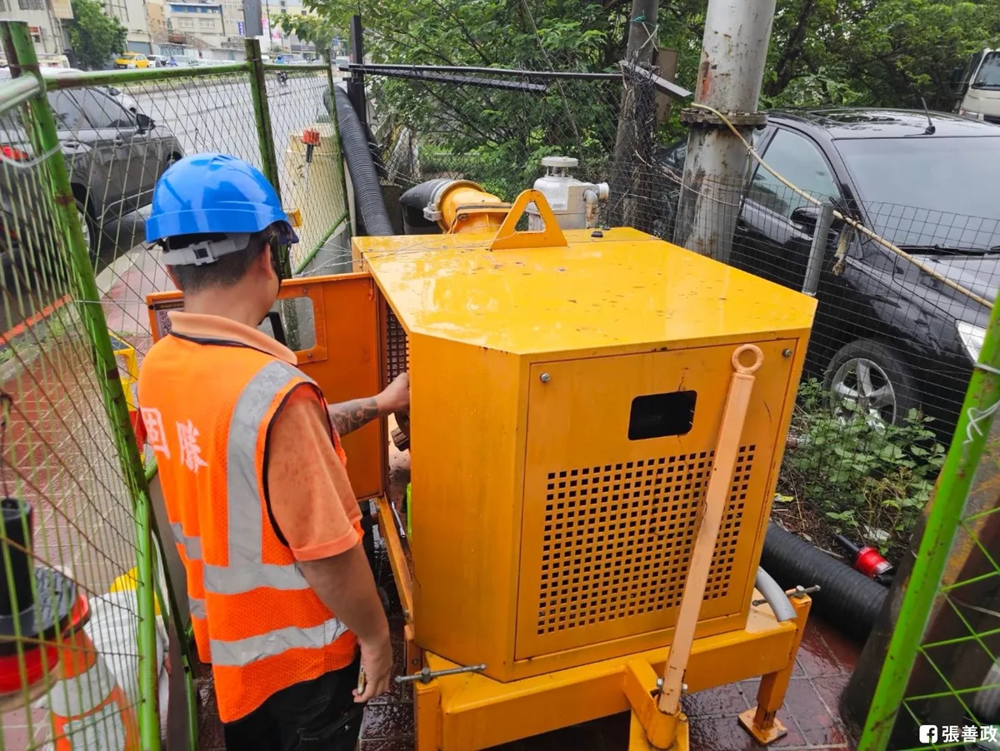
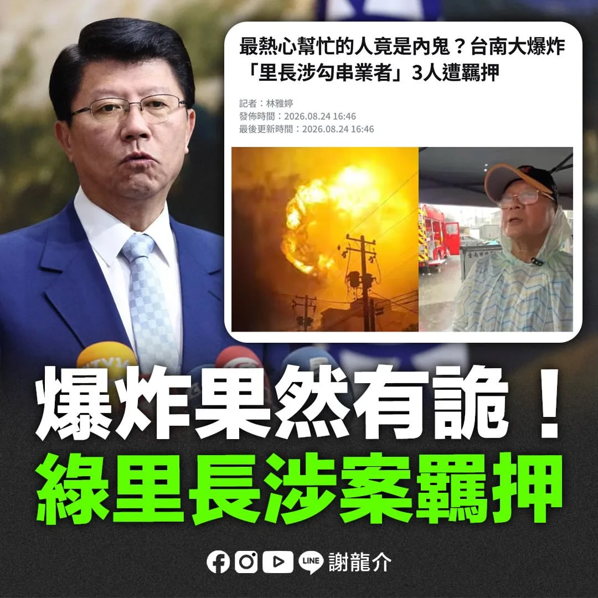
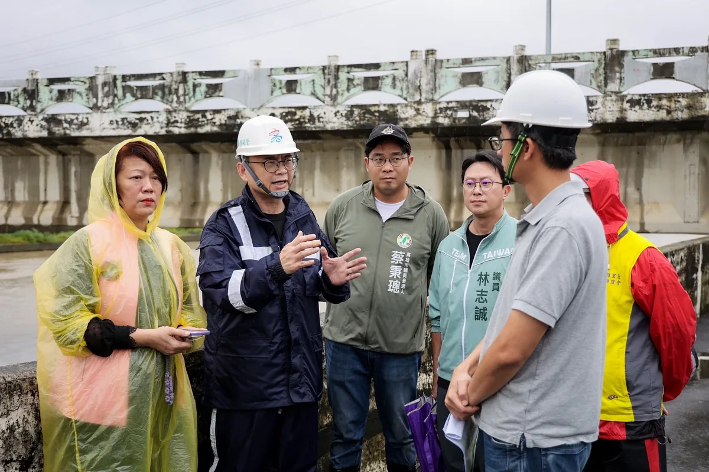
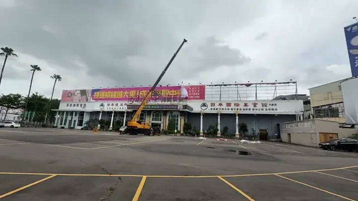

MAYOR2026.OBSERVE.TW
整理臺北、新北、桃園、臺中、臺南、高雄市長候選人的官方公開發文，跨平台合併時間軸與議題比例。
Six Municipalities
最後更新 2026-08-25 10:36
Latest
@schuanglawyer:張善政躺平四年才急著抱佛腳？不要拿「幼擴二期」來掩飾產業政策的無能！ 三年多前，張善政把台積電趕出桃園。最近眼看選舉到了火燒屁股，急著拋出幼擴二期要開放給台積電供應鏈進駐，充當政績。 幼擴二是早在文燦當市長、世杰的立委任內就積極推動的計畫。文燦市長卸任前完備程序，送內政部都委會審查。 結果張善政上任三年半以來，專案小組會議只開兩次，都市計畫審議一動不動。現在才想起被自己冷凍四年的幼擴二，拿來當作挽救形象的遮羞布。 這就是張善政的施政風格，讓桃園錯過台積電這麼久、把幼擴二期持續冰著。 張善政如果不懂問題在哪，歡迎來問我，我會好好告訴你該怎麼做。 如果做不到，那就讓黃世杰來做！

2026 Ocean Current Merchandise and Shen Po-yang Campaign Spokesperson Announcement Press Conference


@zenolai:8月下旬豪雨農損救助！高雄市農業全品項開放申請 連日豪雨，除了積極勘災，我們也持續向中央爭取建設經費及災害補助，並以「從簡、從速、從寬」為原則，做市民最堅強的後盾。 農業部正式公告，高雄市列入本次天然災害現金救助地區，「 #農產業全品項 」均納入救助範圍，同時提供 #低利貸款申請 。申請資訊如下： 🔺申請項目：農產業全品項 🔺受理地區：高雄市全區 🔺申請期間：8月25日至9月7日（假日照常受理） 🔺辦理地點：土地所在地的區公所 #農作物損失率達20%以上 之農友，備妥身分證、印章、存摺、土地相關證明等文件，向 #所在地公所 申辦。有低利貸款需求者，請於10個工作日內先申請受災證明，以利後續辦理。


針對8月22日起致災性豪雨， 造成台南仁德、永康多處低窪地區嚴重積淹水。 先謝謝這幾天在最前線的每一位， 冒雨清淤的基層同仁、 凌晨還在巡邏的里長、 不睡覺輪班的警消弟兄、 把病人抬過水面的醫院同仁、 國軍支援的弟兄。 這次豪雨顯極端氣候下台南治水面臨的新挑戰， 尤其短時間內出現極端高強度降雨，過去以10年防洪頻率所規劃的排水系統，已逐漸難以因應現今動輒25年防洪頻率、甚至時雨量200毫米的極端降雨。 面對新的氣候型態，治水思維也必須從過去單純「治河川、清排水」，進一步升級為「區域治水」。 過去都市發展過程中， 魚塭、農地及空地逐漸減少， 城市可以自然蓄水、滲水的空間也跟著縮小。 因此未來除了持續改善河川、排水與抽水設施，更重要的是結合都市計畫，找出可以「裝水」的空間，透過逕流分擔、滯洪及分區排水，把雨水壓力分散開來。 特別是，虎尾寮水資源回收中心周邊地勢較低，豪雨期間水流會穿越高速公路後匯集，新增沉水式抽水設施後，可有效提升該區域排水能力。 同步協助抽除高速一街、文山路及周邊地區積水；文山路兩側既有排水線路也可配合進行雙向抽水，形成更具彈性的區域排水系統，總經費有提報3000萬， 若再加上萬代橋高速公路下設置沉水式的抽水站，相信仁德、東區一帶市區的淹水即可獲得改善。 面對極端氣候，治水要提前做好準備。 我們一定會透過中央地方合作，把每一分治水經費花在最需要的地方，降低積淹水風險，讓仁德、東區、永康居民住得更安心。

@zenolai:防汛期間，抽水設備運作、道路排水及各地水情都必須即時掌握。持續深入現場、排除問題，把防災應變落實在每一個需要的地方，感謝每一位堅守崗位、守護高雄的夥伴，大家辛苦了！


#沙德爾颱風逼近 全面啟動防颱整備 因應沙德爾颱風可能帶來的風雨，市府各項防颱整備持續進行。 目前，全市181台抽水機均已完成整備，並針對易淹水熱點預先布設；轄管水門與滯洪池也陸續進行預先抽放水作業，預留充足滯洪空間。 另外，全市已備妥約2萬5,000包砂包，預計自8月25日下午2時起，由各區公所開放有需要的市民朋友領取。 針對在建工程，我們也持續加強工區防護，全市41處水患自主防災社區同步加強巡查。 原本例行進行的排水巡檢及清淤工作，也針對歷史積淹水點提高巡查頻率，確認排水設施維持正常運作。 這幾天受到鋒面影響，昨天中壢實踐路、環中東路口一帶一度出現積水。我特別請環管處清潔隊再到現場確認，清潔隊同仁進入側溝檢查後，發現一座疑似遭棄置後進入排水系統的洗衣槽，卡在側溝內影響水流，經同仁費力取出後，水流已恢復順暢。 這也提醒我們，即使平時持續清淤，任何突發的堵塞物，都可能影響排水。因此，我也要求各區公所針對歷史積淹水點加密巡查，並透過QR Code巡檢機制掌握現場狀況，一旦發現淤積或排水異常，立即通報、立即處理。 市府將密切掌握颱風動態與降雨趨勢，隨時調整各項應變作為。 也提醒市民朋友，颱風來臨前請做好居家防颱準備，檢查並清理住家周邊排水孔，一起做好準備、守護家園安全。

等待結束 .ᐟ 沈伯洋「洋流好物」，即將在明天與大家見面 .ᐟ.ᐟ ⠀ ꒰ 搶先一睹洋流好物 加入沈伯洋官方LINE帳號， 明天上午09:30準時收到好物公布記者會的提醒與連結 ⠀ ꒰ 上線時間 8/25（二）中午12:00 ⠀ ꒰ 貼心提醒 預先註冊，上線後流程更「順」喔 .ᐟ

@hsiehlungchieh:兩天前，龍介就說過，安南區這場大爆炸，絕對不能只當成一場普通爆炸案處理。現在案情愈查愈深，愈來愈多疑點浮上檯面。 檢方查出，民進黨籍的理想里里長鄭順，涉嫌與楊姓仲介、龔姓男子共同非法堆置廢棄物，三人今天都遭法院裁定羈押禁見。 司法最後怎麼查、怎麼判，我們尊重；但背後到底還有多少人、多少利益關係，一定要繼續查到底。 更奇怪的是，地主說土地十多年來借給里長作為停車場，地主、里長卻都說「不認識」所謂的仲介；另一頭，檢警卻正在追查仲介、租金與相關金流。 龍介就要問：這塊地到底是誰同意拿來堆廢棄物？誰牽線？誰收錢？錢最後流到哪裡？ 含鎂、鋁等危險廢棄物，不是三兩包垃圾，而是一車一車運進住宅區旁邊。附近建案人員甚至曾看到外車進場傾倒、拍下車牌。這麼大的動靜，地方和市府的稽查系統，難道一路都沒人發現、沒人管？ 現在既然連鄭姓里長、業者、仲介都被捲入調查，就不能只抓幾個人交差。廢棄物來源、清運管道、土地關係、背後金流，有沒有形成一整條非法利益鏈，都要查清楚。 司法查刑責，市府就要查行政責任。龍介還是那句話：火可以把垃圾燒掉，不能把責任跟金流一起燒掉。


今天上午勘災行程告一段落，看到行政院長卓榮泰表示，因為立法院刪減相關預算，讓他無法親自前往災區勘災，只能透過電話與地方政府保持聯繫。 我想對卓院長說，您可以不用南下，但懇請您苦民所苦、以慈悲為重，把中央的資源用在最需要的地方。 高雄這幾天災情嚴重，許多民眾家園進水、農漁業受損。災民現在要的很簡單：水能不能退、路能不能走、損失能不能獲得補償，更重要的是下一場雨來之前，政府能不能做好準備。 撇除情感回到事實層面，中央並非沒有資源。115年度治水經費517億元、災害準備金50億元、第二預備金80億元，總預算已三讀通過。早在今年3月，立法院更已通過「新興計畫先行動支案」，同意行政院先行動支718億元，其中就包含147億元「縣市管河川及排水整體改善計畫」治水經費。 資源已經在您手中，現在最重要的，就是把錢用在該用的地方，把行政力量用在最需要的地方。 災情當前，高雄市民不需要您的政治口水，更不想看到政黨之間互相推諉。行政院現在該做的不是哭窮，也不是把立法院當成政治攻防的對象，而是立即調度資源、核定經費，和地方政府一起把災民最需要的事情做好。 卓榮泰院長您可以不用南下，但中央不能缺席。 高雄鄉親在清理積水、整理家園時，更在意的是政府能不能在最需要的時候，及時伸出援手。 此時此刻，請中央多想一想災民的處境，莫忘世上苦人多。

@zenolai:下午到梓官勘查潭子底抽水站，了解抽水設備運轉及周邊排水情形，接著前往赤崁里及蚵仔寮嘉展路，查看退水後的清理及復原狀況。 潭子底排水匯入典寶溪，遇到典寶溪水位高漲時，容易影響北梓官排水。抽水站量能已從每秒0.9立方公尺提升至15立方公尺，持續強化區域抽排能力。 這波豪雨造成部分地區積淹水，退水後清潔隊、國軍弟兄也立即投入清理與復原，協助民眾儘快恢復正常生活，感謝所有投入第一線的夥伴，大家辛苦了。 相關災損及地方需求，我會持續協助，也會向中央爭取災害補助從優、從寬認定，減輕受災鄉親的負擔。

@su.chiaohui:巧慧照顧市民口腔健康！政見一次看🦷 從小朋友的塗氟防蛀、長輩的假牙補助，到深入社區的居家醫療，未來我會攜手專業團隊，完善醫療資源，守護全體市民的口腔健康！

@zenolai:連日豪大雨影響高雄，這幾天不停走訪各地，了解各地狀況、聽取鄉親反映，掌握各地水情，把市民安全放在第一位。
@su.chiaohui:🙋♂️：新北去哪裡可以找到超可愛的水獺媽媽玩偶呢？ 💁♀️：這裡就有啊！ 🙋♂️：Kám-án-ne（敢按呢）？ 🙆♀️：tong-liân（當然）！ 歡迎捐款支持巧慧，收藏屬於你的玩偶❤️ 🔗https://chiao.tw/donate

🍑飯後來顆多汁梨山水蜜桃！ 緊接著東勢甘露梨接力登場😋 推薦大家晚餐後的幸福時刻，就從一顆多汁甜美的梨山水蜜桃開始！ 梨山得天獨厚的高山氣候與純淨水質，孕育出果肉細緻、香甜爆汁的頂級水蜜桃。每一顆水蜜桃的背後，都凝聚著在地果農一整年的辛勞與用心，水蜜桃季即將進入尾聲，緊接著就是清脆多汁的 #寶島甘露梨 、#高接梨 、#蜜蘋果 盛產接棒！這些都是我們大臺中、梨山引以為傲的農業金字招牌。 邀請大家一起用行動力挺在地辛勤耕耘的農民朋友！品嚐當季最鮮甜的臺中味，讓中臺灣的甜蜜好味道走向全臺、邁向國際！ #梨山水蜜桃 #寶島甘露梨 #臺中農特產 #農家子弟 #力挺在地農友 #臺中味 #臺中啟程 #打造旗艦城

因應極端氣候，我們盡全力守護家園，從抽水站、道路到社區，逐一勘查，實地了解市民需求。地方需要什麼，我們儘速協調資源，復原工作刻不容緩。
@schuanglawyer:明天早上9:00，動起來！埔心市場掃街✨ 楊梅的埔心市場是在地居民日常採買的重要去處，客家傳統與眷村飲食文化在這裡自然交會。從客家傳統點心、中式早點到各式特色小吃，周邊還藏著不少低調老店、老饕才知道的隱藏版美食，走一趟就能感受到埔心多元又豐富的生活滋味👍🏻 明早9:00世杰到埔心市場和大家問早！心楊梅，動起來💖
@pumashen:等待結束 .ᐟ 沈伯洋「洋流好物」， 即將在明天與大家見面 .ᐟ.ᐟ ⠀ ꒰ 搶先一睹洋流好物 加入沈伯洋官方LINE帳號， 明天上午09:30準時收到 好物公布記者會 提醒與連結 ⠀ ꒰ 上線時間 8/25（二）中午12:00 ⠀ ꒰ 貼心提醒 預先註冊， 上線後流程更「順」喔 .ᐟ
兩天前，龍介就說過，安南區這場大爆炸，絕對不能只當成一場普通爆炸案處理。現在案情愈查愈深，愈來愈多疑點浮上檯面。 檢方查出，民進黨籍的理想里里長鄭順，涉嫌與楊姓仲介、龔姓男子共同非法堆置廢棄物，三人今天都遭法院裁定羈押禁見。 司法最後怎麼查、怎麼判，我們尊重；但背後到底還有多少人、多少利益關係，一定要繼續查到底。 更奇怪的是，地主說土地十多年來借給里長作為停車場，地主、里長卻都說「不認識」所謂的仲介；另一頭，檢警卻正在追查仲介、租金與相關金流。 龍介就要問：這塊地到底是誰同意拿來堆廢棄物？誰牽線？誰收錢？錢最後流到哪裡？ 含鎂、鋁等危險廢棄物，不是三兩包垃圾，而是一車一車運進住宅區旁邊。附近建案人員甚至曾看到外車進場傾倒、拍下車牌。這麼大的動靜，地方和市府的稽查系統，難道一路都沒人發現、沒人管？ 現在既然連鄭姓里長、業者、仲介都被捲入調查，就不能只抓幾個人交差。廢棄物來源、清運管道、土地關係、背後金流，有沒有形成一整條非法利益鏈，都要查清楚。 司法查刑責，市府就要查行政責任。龍介還是那句話：火可以把垃圾燒掉，不能把責任跟金流一起燒掉。

下午到梓官勘查潭子底抽水站，了解抽水設備運轉及周邊排水情形，接著前往赤崁里及蚵仔寮嘉展路，查看退水後的清理及復原狀況。 潭子底排水匯入典寶溪，遇到典寶溪水位高漲時，容易影響北梓官排水。抽水站量能已從每秒0.9立方公尺提升至15立方公尺，持續強化區域抽排能力。 這波豪雨造成部分地區積淹水，退水後清潔隊、國軍弟兄也立即投入清理與復原，協助民眾儘快恢復正常生活，感謝所有投入第一線的夥伴，大家辛苦了。 相關災損及地方需求，我會持續協助，也會向中央爭取災害補助從優、從寬認定，減輕受災鄉親的負擔。

🌧️極端豪雨一再來襲，台南治水不能停在原地！ 今天我邀集經濟部賴建信次長、水利署副署長及市府相關單位，前往仁德、永康大灣現勘，全面檢視三爺溪流域、仁德市區、文德路、文山路及大灣的排水系統與抽水量能。 面對短時間高強度降雨，治水不能只看一條河、一座抽水站，而要從「區域治水」整體規劃，找出更多可以滯洪、蓄水的空間，提升抽水與排水能力。 我也爭取虎尾寮水資源回收中心、文山路及萬代橋周邊增設沉水式抽水設施，強化仁德、東區及永康的區域排水。 極端氣候下，治水要超前部署、中央地方一起拚，把每一分經費用在最需要的地方，讓市民住得更安心！ 萍易近人．台南市議員陳秋萍、#杜素吟、吳禹寰、#陳皇宇、#鄭佳欣、#郭鴻儀、朱正軒 Tsu Tsìng-hian、林冠維 Lin Kuan-Wei、#黃肇輝 #陳亭妃 #區域治水 #東區 #仁德 #永康 #三爺溪 #治水不能等 #台南
@pumashen:「洋流好物」大公開！ 今天中午12點正式上線！ 每個方案各有亮點，但心意同樣珍貴！ ⠀ ❑ 捐款方案 𝙉𝙏 $888〖台北順起來〗 𝙉𝙏 $1,234〖123，順起來〗 𝙉𝙏 $2,026〖你的市長〗 𝙉𝙏 $3,939〖應援台北〗 𝙉𝙏 $6,666〖台北 Future Soon〗 𝙉𝙏 $10,000〖TAIPEI HEART〗 𝙉𝙏 $66,666〖台北順順順〗 𝙉𝙏 $100,000〖鐵粉撲力挺〗 ⠀ ❑ 捐款方式 𝙎𝙩𝙚𝙥 𝟭：進入捐款頁面，並確認您已登入帳號 𝙎𝙩𝙚𝙥 𝟮：選擇方案 𝙎𝙩𝙚𝙥 𝟯：選擇規格（如有），並點選「加入購物車」 𝙎𝙩𝙚𝙥 𝟰：點選右上角購物車，確認無誤後點選「前往結帳」 𝙎𝙩𝙚𝙥 𝟱：完成資料填寫，並點選「前往付款」 ＊依政治獻金法規定，請務必填寫真實資訊＊ 𝙎𝙩𝙚𝙥 𝟲：進行線上捐款，並確認頁面最後顯示「訂單已建立」即表示完成！ ⠀ ❑ 已捐款者 請於近期留意您的電子信箱，我們將以「donate@pumashen.org」通知您回饋品寄送方案。 如有收到其他非此信箱寄出的類似信件，請勿理會。
南部慘淹「水好乾淨」？ 蘇一峰：青鳥讓民進黨不認錯 〈 南部慘淹「水好乾淨」？ 蘇一峰：青鳥讓民進黨不認錯 〉本文來自於《 龍傳媒新聞 iNews Long 》。 南部地區連日豪雨，淹水災情頻傳。胸腔科醫師蘇一峰今天接受專訪無奈表示，大家關注的是為什麼南部一直淹水，但青鳥卻說「這水好乾淨啊」、「我們民進黨好棒啊」...
🙋♂️：新北去哪裡可以找到超可愛的水獺媽媽玩偶呢？ 💁♀️：這裡就有啊！ 🙋♂️：Kám-án-ne（敢按呢）？ 🙆♀️：tong-liân（當然）！ 歡迎捐款支持巧慧，收藏屬於你的玩偶❤️ 🔗https://chiao.tw/donate（請搜尋：蘇巧慧官方網站）

防汛期間，抽水設備運作、道路排水及各地水情都必須即時掌握。持續深入現場、排除問題，把防災應變落實在每一個需要的地方，感謝每一位堅守崗位、守護高雄的夥伴，大家辛苦了！

@zenolai:因應極端氣候，我們盡全力守護家園，從抽水站、道路到社區，逐一勘查，實地了解市民需求。地方需要什麼，我們儘速協調資源，復原工作刻不容緩。
明天早上9:00，動起來！埔心市場掃街✨ 楊梅的埔心市場是在地居民日常採買的重要去處，客家傳統與眷村飲食文化在這裡自然交會。從客家傳統點心、中式早點到各式特色小吃，周邊還藏著不少低調老店、老饕才知道的隱藏版美食，走一趟就能感受到埔心多元又豐富的生活滋味👍🏻 明早9:00世杰到埔心市場和大家問早！心楊梅，動起來💖

#高雄市山區五行政區明日停止上班、停止上課 因山區連日大雨，預測雨量已達停班停課標準，且目前仍列為土石流紅色警戒及大規模崩塌紅色警戒區。市府宣布，那瑪夏、桃源、茂林、甲仙及六龜5個行政區，明（25）日停止上班、停止上課。 提醒山區鄉親，連日降雨容易造成土石鬆動，請減少不必要外出，並配合區公所撤離及道路管制。其他地區的市民朋友明天出門也請攜帶雨具，開車、騎車放慢速度。 謝謝在山區協助撤離、巡查及道路維護的防災夥伴們，辛苦了。請大家注意安全。

今天上午勘災行程告一段落，看到行政院長卓榮泰表示，因為立法院刪減相關預算，讓他無法親自前往災區勘災，只能透過電話與地方政府保持聯繫。 我想對卓院長說，您可以不用南下，但懇請您苦民所苦、以慈悲為重，把中央的資源用在最需要的地方。 高雄這幾天災情嚴重，許多民眾家園進水、農漁業受損。災民現在要的很簡單：水能不能退、路能不能走、損失能不能獲得補償，更重要的是下一場雨來之前，政府能不能做好準備。 撇除情感回到事實層面，中央並非沒有資源。115年度治水經費517億元、災害準備金50億元、第二預備金80億元，總預算已三讀通過。早在今年3月，立法院更已通過「新興計畫先行動支案」，同意行政院先行動支718億元，其中就包含147億元「縣市管河川及排水整體改善計畫」治水經費。 資源已經在您手中，現在最重要的，就是把錢用在該用的地方，把行政力量用在最需要的地方。 災情當前，高雄市民不需要您的政治口水，更不想看到政黨之間互相推諉。行政院現在該做的不是哭窮，也不是把立法院當成政治攻防的對象，而是立即調度資源、核定經費，和地方政府一起把災民最需要的事情做好。 卓榮泰院長您可以不用南下，但中央不能缺席。 高雄鄉親在清理積水、整理家園時，更在意的是政府能不能在最需要的時候，及時伸出援手。 此時此刻，請中央多想一想災民的處境，莫忘世上苦人多。

下午到梓官勘查潭子底抽水站，了解抽水設備運轉及周邊排水情形，接著前往赤崁里及蚵仔寮嘉展路，查看退水後的清理及復原狀況。 潭子底排水匯入典寶溪，遇到典寶溪水位高漲時，容易影響北梓官排水。抽水站量能已從每秒0.9立方公尺提升至15立方公尺，持續強化區域抽排能力。 這波豪雨造成部分地區積淹水，退水後清潔隊、國軍弟兄也立即投入清理與復原，協助民眾儘快恢復正常生活，感謝所有投入第一線的夥伴，大家辛苦了。 相關災損及地方需求，我會持續協助，也會向中央爭取災害補助從優、從寬認定，減輕受災鄉親的負擔。

何欣純成功爭取中央核定 捷運橘線進大里！！💪💪